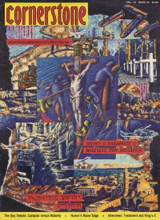

CMnexus
:
Contemporary Christian culture, music, and media.
Magazines
Profiles
Dove Awards
cmnexus.org
CM
nexus
→
Magazine list
→
Cornerstone
→
Issues
Cornerstone
1991, vol. 19, iss. 94
< -- Prev
Issue list
Next -- >
Cover

Writers in this Issue
David Canfield
Brian Glover
Mark Jaquette
Glenn Kaiser
Chris Ramsey
Dick Randall
Jon Trott
Interview:
Testament
by Chris Ramsey, David Canfield
King's X
by Chris Ramsey, David Canfield, Brian Glover
Album Review:
Chagall Guevara
-
Chagall Guevara
by David Canfield
Jet Circus
-
Step On It
by David Canfield
Russ Taff
-
Under Their Influence
by David Canfield
The Call
-
Red Moon
by Mark Jaquette
The Neville Brothers
-
Brother's Keeper
by Glenn Kaiser
King's X
-
Faith, Hope, Love
by David Canfield
Amy Grant
-
Heart in Motion
by David Canfield
Soldiers For Christ
-
A Saved Man in the Jungle
by David Canfield
Rick Cua
-
Within Reach
by David Canfield
The Choir
-
Circle Slide
by David Canfield
Believer
-
Sanity Obscure
by Jon Trott
Take 6
-
So Much 2 Say
by Dick Randall
Sacred Warrior
-
Wicked Generation
by David Canfield
D-Boy Rodriguez
-
The Lyrical Strength of One Street Poet
by David Canfield
Matthew Ward
-
Fortress
by David Canfield
Relevant Links
Official web site of Cornerstone
You may be able to find
Cornerstone
in a library near you:
check
Worldcat
< -- Prev
Issue list
Next -- >
CMnexus
(noun)
The magazine index
of modern music
and Christianity
© 2011 CMnexus. Last updated August 2025.
Contact:
Rants and other correspondence to:
editor -AT- cmnexus
-DØT- org
About